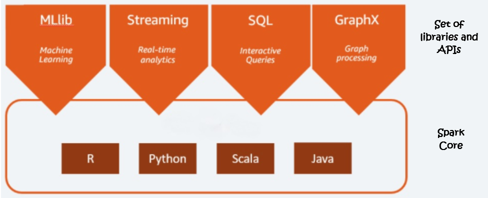
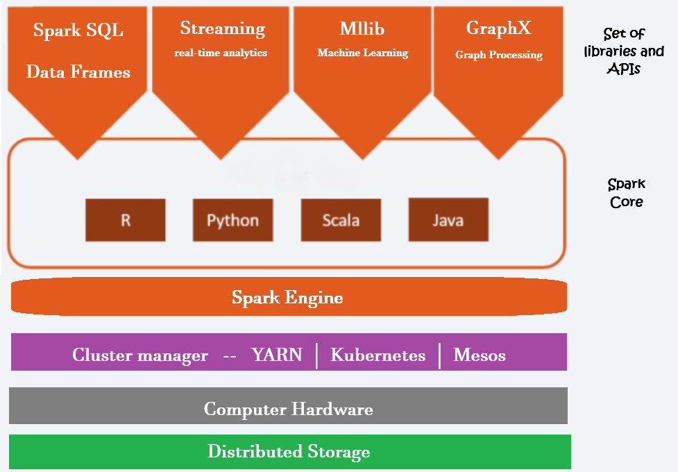

Apache Spark is the distributed data processing framework. It is the most popular and widely adopted data processing framework in a data lake. It is an open source analytics engine used for big data workloads.
Apache Spark is a powerful tool used for processing large amount of data. It allows multiple computers in a cluster to work togeather to handle tasks sumultaneously, making the whole process faster and more efficient.

Diagram represents the Spark Ecosystem. The Spark ecosystem is designed in two layers. The bottom layer is the Spark Core Layer. Then we have the next layer, a set of DSLs, libraries, and APIs. These two things together make the Spark ecosystem.
The Spark core layer itself has got two parts. A distributed Computing Engine And a set of core APIs. And this whole thing runs on a cluster of computers(computer Hardware) to offer you distributed data processing.
However, Spark does not manage the cluster. It only gives you a data processing framework. So, you are going to need a cluster manager.

The Hadoop YARN resource manager is the most commonly used cluster manager for Spark. However, you have other options, such as Mesos and Spark Standalone Cluster Manager.
Similarly, Spark also doesn't come with an in-built storage system. And it allows you to process the data, which is stored in a variety of storage systems. The most popular and commonly used storage systems are HDFS, Amazon S3, Azure Data Lase Storage, Google Cloud Storage, and the Cassandra file system.
So, one thing is obvious. Apache Spark does not offer Cluster Management and Storage Management. All you can do with Apache Spark is to run your data processing workload. And that part is managed by the Spark Compute Engine.
So the compute engine is responsible for a bunch of things. For example, breaking your data processing work into smaller tasks,scheduling those tasks on the cluster for parallel execution, providing data to these tasks, managing and monitoring those tasks, provide you fault tolerance when a job fails. And to do all these, the core engine is also responsible for interacting with the cluster manager and the data storage manager. So the Spark compute engine is the core that runs and manages your data processing work and provides you with a seamless experience.
All you need to do is submit your data processing jobs to Spark, and the Spark core will take care of everything else.
Now let's move a level up. The second part of the Spark Core - The Core APIs. This layer is the programming interface layer that offers you the core APIs in four major languages - Scala, Java, Pyhton, and R programming language.
These are the APIs that we used to write data processing logic during the initial days of Apache Spark. However, these APIs were based on resilient distributed datasets (RDD). And people found them a little tricky to learn and use for their day-to-day data processing work. However, these APIs are the most complicated way to work with Apache Spark. And the Spark creators are now recommending avoiding them as much as possible.
Now let's move to a top most layer. The topmost layer is the prime area of interest for most Spark developers and data scientists. This layer is again a set of libraries, packages, APIs, and DSL. These are developed by the Spark community over and above the Core APIs. So, you will be using these top-level APIs and DSLs. But internally, all of those will be using Spark Core APIs, and ultimately things will go to the Spark Compute Engine.
The topmost API layer is grouped into four categories to support four different data processing requirements. The first group is a set of two things. Spark SQL and then Spark DataFrame/Dataset APIs. Spark SQL allows you to use SQL queries to process your data. So that part is quite simple for those who already know SQL. Spark DataFrame/DataSet will allow you to use functional programming techniques to solve your data crunching problems. These APIs are available in Java, Scala, and Python. Both of these together can help you resolve most of the structured and semistructured data crunching problems.
The next one is Spark Streaming libraries, and they allow you to process a continuous and unbounded stream of data.
Then you have a set of libraries specifically designed to meet your machine learning, deep learning, and AI requirements.
The last collection is for Graph Processing libraries, and they allow you to implement Graph Processing Algorithms using Apache Spark.
So the topmost layer is nothing but a set of libraries and DSLs to help you solve your data crunching problems. And all these are available in multiple languages such as Java, Scala, Python, and R.
Databricks is a cloud-based platform designed for data engineering, machine learning, and analytics, built on the open-source Apache Spark.
Databricks brings Apache Spark to the Cloud Platform. In fact, Databricks product is known as Databricks Cloud. And the Databricks Cloud is only available on the Cloud platforms. But they are available on AWS, Azure, and Goole Cloud.
So Databricks brings Apache Spark on all the major cloud platforms. Databricks allows you to launch a Cluster for running Spark applications automatically. That takes a lot of burden from you. You do not need to configure and launch a cluster manually for running your Spark applications. Databricks allows you to start, configure, and install all the dependency and runtime libraries on all the nodes to run your Spark application.
So, in a nutshell, Databricks offers you an easy way to configure, launch, and shut down the clusters in the cloud environment.
Databricks Cloud also offers you Notebooks and Workspace for Spark development. These workspace and Notebooks are as good as IDE for spark development. You can use the notebooks to develop, share and collaborate with your colleagues for Spark development.
Databricks Spark runtime is 5x faster than the standard Apache Spark runtime.